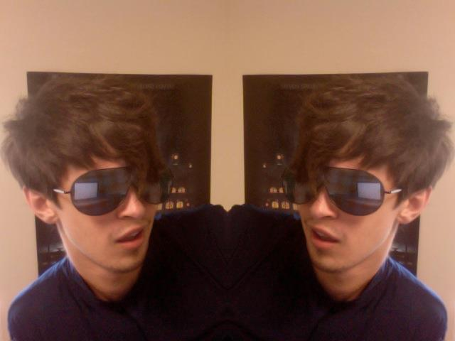

Who Am I?
My name is Devin DePaepe, I'm 22 years old, and I'm a senior at Michigan State University. Now that the boring introductions are done we can get into who I really am. There are a number of things that make me who I am from gaming to running. My interest in running has lead me through a lot of personal growth. I completed my first marathon while I was 21 and I've never felt more accomplished. I'm getting a degree in Interactive and Social Media. I'm also getting a minor in Computer Science to complement my degree.
Ok but there's a lot of work involved with those accademic goals
How does this kid do it all?
I'm glad you asked
How Do I Do It?
For me it all comes down to the tools for my job... my computer.
When it comes to computers I've got just about everything I could want.
I built my computer earlier this year and I gave it all the best toys.
To make it the best machine possible for both games and coding.
I'm running Windows 8.1 Pro and I'm running a Wheezy virtual machine for coding.
Here are some other specs:
- Processor: Intel i5-4670k overclocked to 4.2 GHz
- Motherboard: ASUS Z-87 Pro
- Memory: 32GB at 1600GHz
- HDD: Western Ditital 1TB
- SSD: Samsung 250 GB
- PSU: Seagate 750 Watt
- GPU: Nvidia GTX 770
Goals
I'm currently working at Jackson National Life Insurance Co. here in East Lansing.
While this by itself is a great job what has me really would be a job in IT.
This is part of the reason I choose to work at Jackson in the first place.
Every year they hold a 16 week program to train graduates to fill their IT possitions.
Besides my work I've got a number of other personal goals like competing on American Ninja Warrior, backpacking across Europe, scuba diving on the Great Barrier Reef, and taking a bike trip from Michigan all the way to Florida.